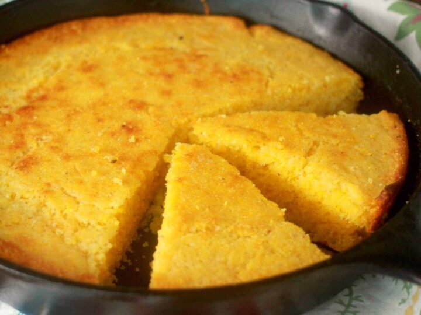

Cornbread

Description
This light, fluffy, sweet cornbread is bound to be a hit with the family.
Paired with a hearty chili, a thick fried porkchop, or served on its own with a pat off butter and drizzled with honey,
this tasty treat is guaranteed to hit the spot. While this cornbread is best served warm an fresh, kept covered it will hold for several days, making the perfect side to soak up leftover soups.
Follow along below to learn how to make a cornbread the whole family will love.
Ingredients
- 1 Cup All-Purpose Flour
- 1 Cup Yellow Cornmeal
- 1/3 Cup White Sugar
- 1/3 Cup, Packed Brown Sugar
- 1 Tsp Salt
- 1 Cup Milk
- 1/3 Cup Butter, melted
- 1 Large Egg
- 1 Tbsp Vanilla Extract
Steps
- Preheat oven to 400F.
- Lightly grease and flour a 9-inch round cake pan.
- Sift all dry ingredients into a large bowl, then whisk together.
- Whisk together wet ingredients, then fold into dry until combined. Some lumps may still be present, this is okay.
- Bake for 20-25 minutes, or until a knife inserted into center comes out clean.